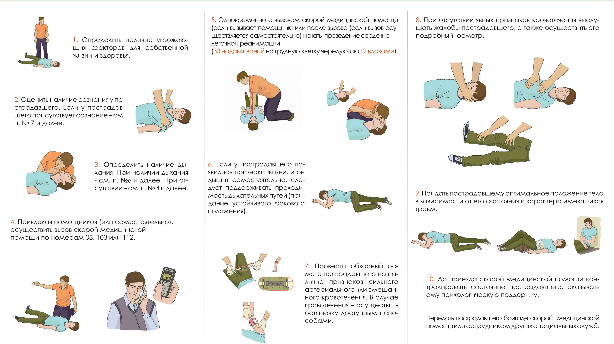

1)Убедиться, что при оказании помощи вам ничего не угрожает и вы не подвергаете себя опасности.
2)Обеспечить безопасность пострадавшему и окружающим (например, извлечь пострадавшего из горящего автомобиля)
3)проверить наличие у пострадавшего признаков жизни (пульс, дыхание, реакция зрачков на свет) и сознания. Для проверки дыхания необходимо запрокинуть голову пострадавшего, наклониться к его рту и носу и попытаться услышать или почувствовать дыхание. Для обнаружения пульса нужно приложить подушечки пальцев к сонной артерии пострадавшего. Для оценки сознания необходимо (по возможности) взять пострадавшего за плечи, аккуратно встряхнуть и задать какой-либо вопрос
4)Вызвать специалистов: 112 — с мобильного телефона, с городского — 03 (скорая) или 01
5)Оказать неотложную первую помощь. В зависимости от ситуации это может быть восстановление проходимости дыхательных путей, сердечно-лёгочная реанимация, остановка кровотечения и другие мероприятия.
6)Обеспечить пострадавшему физический и психологический комфорт, дождаться прибытия специалистов.
